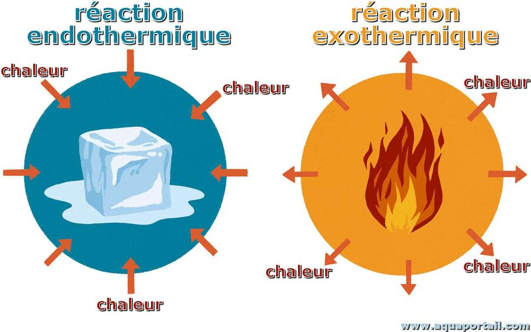
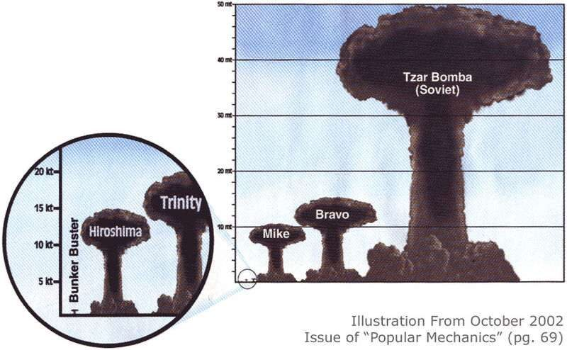
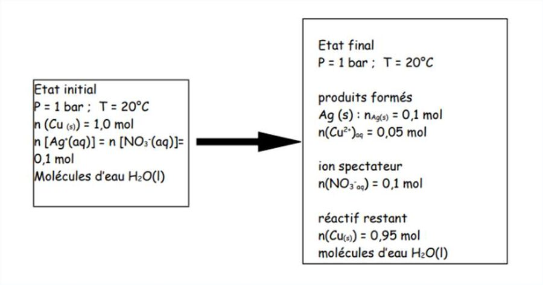

Transformations physiques et chimiques
Ce chapitre sera débloqué en fin de séquence, au rythme de la classe. Le code de déblocage est transmis via le cahier de textes — il figure aussi en bas de ta fiche de cours.
Sommaire du chapitre
Physique-Chimie · Seconde générale · Thème 1 — Constitution et transformations de la matière
Transformations physiques et chimiques
Thème 1 · Chapitre 2 — cours & exercices corrigés
01 Physique ou chimique ?
Une transformation physique est une transformation au cours de laquelle la matière change d'apparence, de forme, d'état mais les espèces chimiques (molécules) ne changent pas.
Une transformation chimique est une transformation au cours de laquelle certaines substances disparaissent et d'autres apparaissent. Les espèces chimiques sont modifiées.
Les situations suivantes sont-elles des transformations physiques ou chimiques ? Obtention d'une flamme ; formation de la rosée ; dissolution de sucre dans le café ; récolte de sel dans un marais salant ; infusion de thé dans l'eau ; formation de vin à partir de jus de raisin ; détartrage de la bouilloire pour éliminer le calcaire ; obtention de neige avec un canon à neige ; explosions de feux d'artifice pour un spectacle pyrotechnique.
Voir la correction
| Transformation physique | Transformation chimique |
|---|---|
| b · c · d · e · h (rosée, dissolution du sucre, récolte de sel, infusion, neige) |
a · f · g · i (flamme, détartrage, vin, feux d'artifice) |
02 Effet thermique des transformations
Une transformation qui libère de l'énergie sous forme de chaleur est appelée réaction exothermique.
Une transformation qui prend de la chaleur au milieu extérieur est appelée réaction endothermique.

Cette réaction produit de la chaleur, c'est une réaction exothermique : C₁₈H₃₆O₂(s) + 26 O₂(g) = 18 CO₂(g) + 26 H₂O(l)
Autres exemples :
- La combustion du glucose dans le corps humain est une transformation chimique produisant de l'énergie thermique pendant l'effort. C'est une transformation exothermique.
- La fusion de l'eau (passage de l'état solide à liquide) est une transformation physique nécessitant un apport d'énergie thermique, c'est une transformation endothermique.
03 États et changements d'état
Dans les conditions de température et de pression à la surface de la Terre, on distingue principalement trois états de la matière :
- Gazeux (g) : les entités sont agitées, espacées, libres les unes par rapport aux autres (non liées), elles s'entrechoquent sans cesse ;
- Liquide (l) : les entités sont mobiles (mais moins de liberté de mouvement que dans un gaz), proches, peu liées ou par des liaisons faibles ;
- Solide (s) : les entités sont presque immobiles (elles vibrent), très proches et liées fortement entre elles.
Lors d'un changement d'état, les propriétés de la matière changent, l'agitation et l'arrangement spatial des entités sont modifiés. Les liaisons entre les entités s'affaiblissent ou se renforcent, se rompent ou se créent. Les neuf changements d'état sont à connaître par cœur !
Donner un exemple pour chacun des changements d'état suivants : vaporisation, solidification, condensation.
Voir la correction
Vaporisation : ébullition de l'eau dans une casserole.
Solidification : formation d'un glaçon.
Condensation : formation des flocons de neige ou de la grêle dans l'atmosphère.
Lors du changement d'état d'un corps pur, la température ne varie plus : cette température est alors appelée température de changement d'état, notée θchangement d'état. Pour un corps pur, on observe un palier sur le graphique température-temps ; pour un mélange, aucun palier n'apparaît et il n'y a donc pas de température de changement d'état.
Exercice 6 — Déterminer si l'étude a porté sur un corps pur ou un mélange, et préciser si possible la température de changement d'état.
Voir la correction
Cas 1 : on observe un palier de température à environ θ = 6 °C, il s'agit donc de la solidification d'un corps pur et la température de solidification est θsolidification = 6 °C.
Cas 2 (cola) : on n'observe pas de palier, il s'agit donc d'un mélange et il n'y a pas de température de changement d'état.
04 Équation d'un changement d'état
Au cours d'un changement d'état physique, les espèces chimiques ne sont pas modifiées. Pour modéliser le changement d'état physique d'une espèce chimique A, on écrit l'équation :
A(état physique initial) → A(état physique final)
Image 5 — Pour la fusion de l'eau solide, l'équation s'écrit : H₂O(s) → H₂O(l)
Établir l'équation de la condensation de l'eau puis de la solidification du fer Fe.
Voir la correction
H₂O(g) → H₂O(s)
Fe(l) → Fe(s)
Quels sont les changements d'état décrits par les équations suivantes ? H₂O(g) → H₂O(s) ; Cu(s) → Cu(g)
Voir la correction
H₂O(g) → H₂O(s) : il s'agit de la condensation (état gazeux (g) à solide (s)) de l'eau H₂O.
Cu(s) → Cu(g) : il s'agit de la sublimation (état solide (s) à gazeux (g)) du cuivre Cu.
05 Énergie de changement d'état
L'énergie massique de changement d'état L d'un corps pur est l'énergie thermique que doit absorber ou libérer par transfert thermique 1 kg de ce corps pour le faire changer d'état à sa température de changement d'état pour une pression donnée. L'énergie massique de changement d'état s'exprime en J.kg⁻¹.
L'énergie nécessaire pour passer d'un état 1 à un état 2 est la même (au signe près) que pour passer de l'état 2 à l'état 1 : Lsublimation = −Lcondensation ; Lfusion = −Lsolidification ; etc.
L'énergie de fusion de l'eau est Lfusion = 336 kJ.kg⁻¹. Quelle quantité d'énergie faut-il pour faire fondre 1 kg de glace ?
Voir la correction
Il faut Q = 1 × 336 = 336 kJ.
L'énergie Q échangée avec le milieu extérieur lors du changement d'état d'un corps pur de masse m est égale au produit de sa masse par son énergie massique de changement d'état L :
Q = m × L
Q est aussi appelée quantité de chaleur et s'exprime en joule J.
Quelle énergie est transférée avec le milieu extérieur lors de la solidification de 200 g de fer pur en fusion ?
Données : Lfusion fer = 270 kJ.kg⁻¹ ; Lsolidification fer = −270 kJ.kg⁻¹
Voir la correction

mfer = 200 g = 0,200 kg. On étudie la solidification du fer donc Lsolidification fer = −270 000 J.kg⁻¹.
Q = mfer × Lsolidification fer = 0,200 × (−270 000) = −54 000 J = −54 kJ.
Q < 0 donc le fer cède de l'énergie au milieu extérieur : la solidification est une réaction exothermique.
Quelle masse d'eau pourrions-nous vaporiser avec l'énergie libérée par la tsar bomba (57 mégatonnes de TNT) ?
Données : 1 Mt = 4,2 × 10¹⁵ J ; Lvaporisation eau = 2,3 × 10⁶ J.kg⁻¹
Voir la correction
QTB = 57 × 4,2 × 10¹⁵ = 2,394 × 10¹⁷ J.
mH₂O = 2,394×10¹⁷ / 2,3×10⁶ ≈ 1,0 × 10¹¹ g = 1,0 × 10⁵ t.
L'énergie libérée par la tsar bomba équivaut à la quantité de chaleur nécessaire pour vaporiser 100 000 tonnes d'eau.
06 Système chimique et transformation chimique
Les espèces chimiques existent sous différents états physiques dont les plus couramment utilisés en chimie sont : l'état solide, noté (s) ; l'état liquide, noté (l) ; l'état gazeux, noté (g) ; l'état aqueux, noté (aq), qui désigne les molécules et ions dissous dans de l'eau (hydratés).


Un système chimique est un échantillon de matière décrit par différents paramètres : des grandeurs physiques (température, pression, …) ; les espèces chimiques qui le constituent ; leurs états physiques ; leurs quantités de matière.
Cette solution de sulfate de cuivre est un système chimique que l'on peut décrire de manière qualitative : sa température est de 20 °C ; sa pression est de 1 bar ; il est constitué d'ions cuivre (II) à l'état aqueux Cu²⁺(aq), d'ions sulfate à l'état aqueux SO₄²⁻(aq) et d'eau à l'état liquide H₂O(l). Pour décrire le système de manière quantitative, il faut connaître les quantités de matière de chacune de ces espèces chimiques.
- On appelle état initial du système chimique, l'état de ce système avant la transformation.
- On appelle état final du système chimique, l'état de ce système après la transformation.
- Les espèces introduites à l'état initial sont appelées les réactifs, les espèces obtenues après la transformation à l'état final sont appelées les produits.
- Une espèce chimique présente dans le système mais qui ne subit aucune modification au cours de la transformation est appelée espèce spectatrice.
On fait réagir à température θ = 20 °C et à la pression P = 1 bar une solution aqueuse de nitrate d'argent (qui contient des ions argent Ag⁺ et des ions nitrate NO₃⁻). Quantités de matière initiales : n(Ag⁺) = n(NO₃⁻) = 0,1 mol ; n(Cu) = 1 mol.

Voir le bilan
En fin de réaction, la température et la pression n'ont pas changé, on observe : un dépôt d'argent métallique n(Ag) = 0,1 mol sur le métal cuivre ; la quantité de matière de cuivre restant est n(Cu)final = 0,95 mol ; la solution de nitrate d'argent est devenue bleue d'où la présence d'ion cuivre Cu²⁺ avec n(Cu²⁺)final = 0,05 mol, n(Ag⁺)final = 0 mol, n(NO₃⁻)final = 0,1 mol (ion spectateur).
| État initial (P=1 bar, T=20 °C) | État final (P=1 bar, T=20 °C) |
|---|---|
| n(Cu(s)) = 1,0 mol n(Ag⁺(aq)) = n(NO₃⁻(aq)) = 0,1 mol molécules d'eau H₂O(l) |
produits formés : n(Ag(s)) = 0,1 mol ; n(Cu²⁺(aq)) = 0,05 mol ion spectateur : n(NO₃⁻(aq)) = 0,1 mol réactif restant : n(Cu(s)) = 0,95 mol |
Au cours d'une transformation chimique, il y a : conservation des éléments chimiques (nature et quantités) ; conservation de la charge électrique globale (électrons). À l'état initial de la réaction 2 H₂ + O₂ → 2 H₂O, il y a 4 atomes d'hydrogène et 2 atomes d'oxygène ; à l'état final aussi. L'état initial est neutre, de même que l'état final.
07 Équation de réaction et stœchiométrie
Une réaction chimique est un processus modélisant une transformation chimique au niveau microscopique. Elle est décrite par une équation de réaction dont l'écriture symbolique contient : les formules brutes et les états physiques des réactifs (à gauche) et des produits (à droite) ; une flèche symbolisant l'évolution du système ; des coefficients — appelés coefficients stœchiométriques lorsqu'ils sont les plus petits possibles — permettant de respecter les deux lois de conservation.
La méthode à suivre pour écrire et équilibrer une équation de réaction :
- Identifier les réactifs et les produits de la réaction.
- Écrire leurs formules brutes, en précisant leurs états physiques, de part et d'autre de la flèche symbolisant la transformation.
- Compter tous les éléments chimiques de part et d'autre de la flèche. Si besoin, placer des coefficients pour équilibrer les éléments chimiques. Commencer toujours par les éléments les moins présents dans les différentes molécules.
- Vérifier que les charges sont équilibrées. Si ce n'est pas le cas un rééquilibrage des coefficients est nécessaire.
Identifier les réactifs, produits et coefficients stœchiométriques : ils réagissent avec les ions hydroxyde de la soude pour former un précipité vert d'hydroxyde de fer (II).
Fe²⁺(aq) + 2 HO⁻(aq) → Fe(OH)₂(s)
Voir la correction
Réactifs : 1 Fe, 2 H, 2 O (2+ et 2− : neutre). Produits : 1 Fe, 2 H, 2 O (neutre). Les réactifs sont l'ion fer (II) et l'ion hydroxyde ; le produit est l'hydroxyde de fer (II).
Ajouter les coefficients stœchiométriques manquants :
H⁺ + Fe → H₂ + Fe²⁺ · Cu²⁺ + HO⁻ → Cu(HO)₂ · CaCO₃ + H⁺ → Ca²⁺ + HCO₃⁻ · CH₄ + O₂ → H₂O + CO₂
Voir la correction
2 H⁺ + Fe → H₂ + Fe²⁺ · Cu²⁺ + 2 HO⁻ → Cu(HO)₂ · CaCO₃ + H⁺ → Ca²⁺ + HCO₃⁻ (déjà équilibrée) · CH₄ + 2 O₂ → 2 H₂O + CO₂
Lors d'un effort physique prolongé, le glucose, de formule chimique C₆H₁₂O₆, est dégradé selon un processus équivalant à sa combustion complète dans le dioxygène, produisant de l'eau et du dioxyde de carbone. Écrire et équilibrer cette équation de réaction.
Voir la correction
Les réactifs sont le glucose (C₆H₁₂O₆) et le dioxygène (O₂) ; les produits sont le dioxyde de carbone (CO₂) et l'eau (H₂O). Équation non équilibrée : C₆H₁₂O₆ + O₂ → CO₂ + H₂O.
Une fois équilibrée : C₆H₁₂O₆ + 6 O₂ → 6 CO₂ + 6 H₂O.
À l'échelle microscopique, les nombres stœchiométriques renseignent sur les proportions, en nombre d'atomes, ions ou molécules, dans lesquelles les réactifs réagissent et les produits se forment.
Cu(s) + 2 Ag⁺(aq) → Cu²⁺(aq) + 2 Ag(s)
Cette équation indique que : « si 1 atome de cuivre est consommé alors 2 ions Ag⁺ seront aussi consommés et il se formera 2 atomes d'argent et 1 ion cuivre Cu²⁺. »
Décrire l'équation CH₄ + 2 O₂ → 2 H₂O + CO₂ à l'échelle microscopique.
Voir la correction
« Si une molécule de méthane (CH₄) est consommée alors deux molécules de dioxygène (O₂) sont aussi consommées et il se formera deux molécules d'eau (H₂O) et une molécule de dioxyde de carbone (CO₂). »
Combien d'atomes d'argent seront produits si 5 atomes de cuivre réagissent avec 10 ions Ag⁺ ?
Voir la correction
D'après Cu(s) + 2 Ag⁺(aq) → Cu²⁺(aq) + 2 Ag(s) : 10 (5×2) atomes d'argent Ag seront produits.
08 Réactif limitant
Le réactif limitant est le réactif qui est complètement consommé dans la réaction. Une fois que ce réactif est entièrement consommé, il arrête la réaction et limite donc le produit fabriqué.
150 molécules de méthane réagissent avec 1000 molécules de dioxygène. Déterminer le réactif limitant et le nombre de molécules présentes à la fin de la réaction.
CH₄ + 2 O₂ → 2 H₂O + CO₂
Voir la correction
Les 150 molécules de méthane réagissent avec (150×2) 300 molécules de dioxygène. Il reste 700 molécules de dioxygène : le dioxygène est un réactif en excès. Toutes les molécules de méthane sont consommées : le méthane est le réactif limitant, la réaction chimique s'arrête.